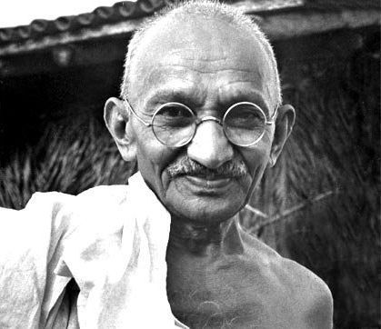

1869-1948
"The best way to find yourself is to lose yourself in the service of others."
Mahatma Gandhi was born on 2 October 1869 in Porbandar, Gujarat. He was married to Kasturba when he was just 13 years old. Mohandas Karamchand Gandhi or Mahatma Gandhi was a renowned freedom activist and an authoritative or powerful political leader who played an essential role in India's struggle for Independence against British rule of India. He was also considered the father of the country.